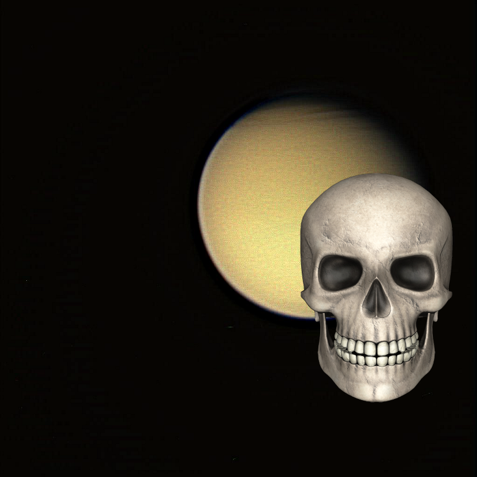
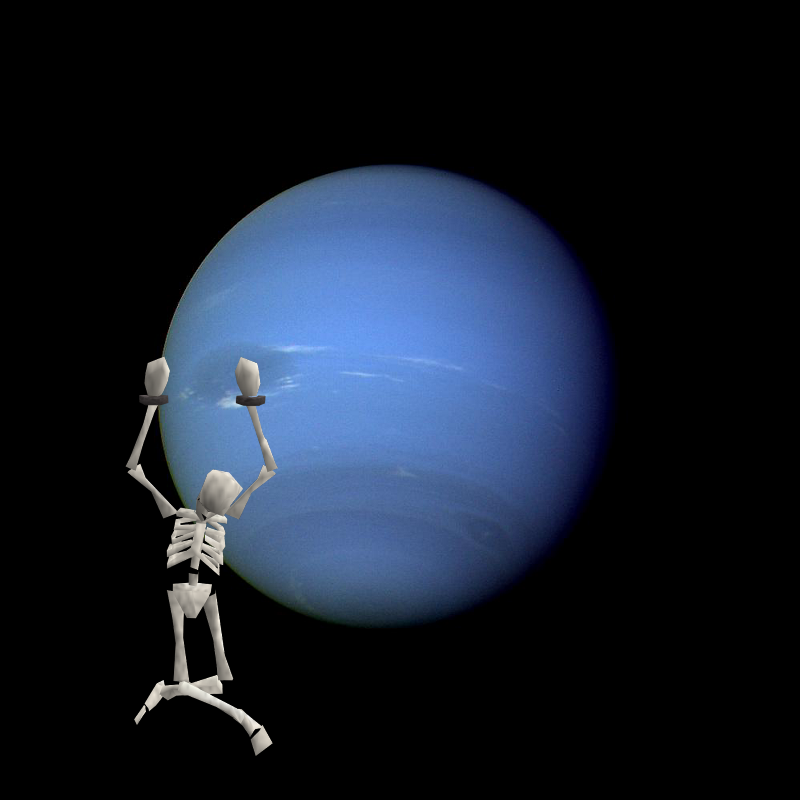

-
A Mystery – Moon - Western Near Side!
-
 An Unexpected Discovery @ Hubble View of Neptune!
An Unexpected Discovery @ Hubble View of Neptune! -
A Mystery, Something Strange, Something Strange | Bright Soil Near McCool!
-
Something Strange ; Planet With Four Stars Artist Concept
-
An Unexpected Discovery + First Touchdown Site of Comet Lander!
-
Something Strange | Double Date: Two Pairs of Stars in One System
-
An Unexpected Discovery @ Callisto Icy Surface!
-
Something Strange, An Unexpected Discovery, An Unexpected Discovery + Solid as a Rock? Porosity of Asteroids
-
A Mystery + NASA Explores the Carina Nebula by Touch
-
An Unexpected Discovery, A Mystery, A Mystery, A Mystery, An Unexpected Discovery, Something Strange, Something Strange, A Mystery, ??? – Cornucopia of Color.
-
An Unexpected Discovery @ Lighting up a Dead Star Layers
-
Something Strange on Exposing Mercury Colors
-
An Unexpected Discovery on Winds Near Jupiter Belt-Zone Boundary
-
An Unexpected Discovery @ A Color View of the Solar System Innermost Planet.
-
Something Strange @ Mercury Through Time
-
Something Strange | Asteroid Initiative Industry and Partner Day.
-
Something Strange – Tracing Surface Features on Titan--Mosaic
-
An Unexpected Discovery | Galaxy Cluster IDCS J1426!
-
A Mystery, Something Strange + Northern Hemisphere of Saturn
-
 Something Strange | History of Hubble Space Telescope (HST).
Something Strange | History of Hubble Space Telescope (HST). -
??? ; Jupiter's Southern Lights!
-
Something Strange @ Ring Shines
-
An Unexpected Discovery on Jupiter Temperatures--Broad Latitude
-
An Unexpected Discovery @ Every Rose has a Thorn
-
A Mystery @ A Different View of the Flame Nebula!
-
Something Strange + Hubble's Panoramic View of a Turbulent Star-Making Region!
-
An Unexpected Discovery + Enhanced Color Mercury Map!
-
A Mystery | Titanic Complexity Color
-
An Unexpected Discovery @ Moons Around Saturn.
-
A Mystery | Harvest Moon at NASA Goddard!
-
Something Strange + Ridge and Trough System on Mercury.
-
An Unexpected Discovery, Something Strange | Obscure Moon.
-
Something Strange ; Cassini Galactic Aspirations!
-
A Mystery | Eroded Surfaces!
-
Something Strange | Belittled Moon.
-
An Unexpected Discovery ; Neptune - Full Ring System.
-
An Unexpected Discovery, An Unexpected Discovery on Massive Star Makes Waves
-
Something Strange @ Neptune Full Disk
-
An Unexpected Discovery @ Hubble Friday - Heavy Metal Stars!
-
 An Unexpected Discovery @ Sand Sea in False Color.
An Unexpected Discovery @ Sand Sea in False Color. -
An Unexpected Discovery + ESO 2.2-m WFI Image of the Tarantula Nebula
-
 A Mystery – The Twin Jet Nebula!
A Mystery – The Twin Jet Nebula! -
 An Unexpected Discovery – Nearby Newborns!
An Unexpected Discovery – Nearby Newborns! -
 An Unexpected Discovery, An Unexpected Discovery, An Unexpected Discovery – Colored Chaos!
An Unexpected Discovery, An Unexpected Discovery, An Unexpected Discovery – Colored Chaos! -
A Mystery | Mapping Mercury Surface in Color.
-
An Unexpected Discovery, An Unexpected Discovery, An Unexpected Discovery on Dead Star Warps Light of Red Star Artist Animation!
-
 A Mystery ; Saturn B rings
A Mystery ; Saturn B rings -
 A Mystery @ Hubble Spies Spiral Galaxy!
A Mystery @ Hubble Spies Spiral Galaxy!